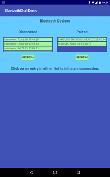
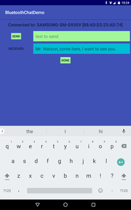

By: Barry Holroyd
|
Bluetooth Chat Demo
is a thorough Bluetooth implementation of a basic chat application.
The app should be run on two separate devices. When started, it will display two lists: one for discovered devices and one for paired devices. Clicking on an entry in either list will cause the app to attempt to connect to that remote device. If the remote device is running this app, the connection will succeed and both devices will then display the chat UI and text can be sent and received. Clicking on "Done" on either device will terminate the session and both devices will return to the original screen. |
 